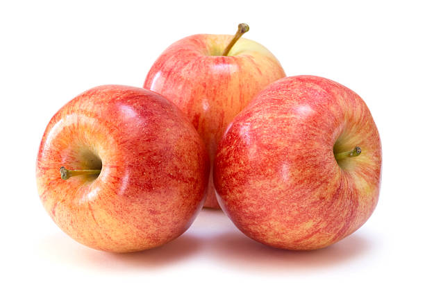
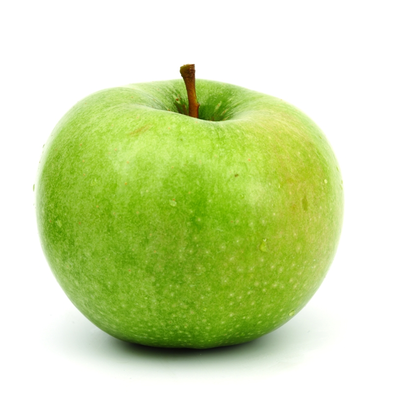
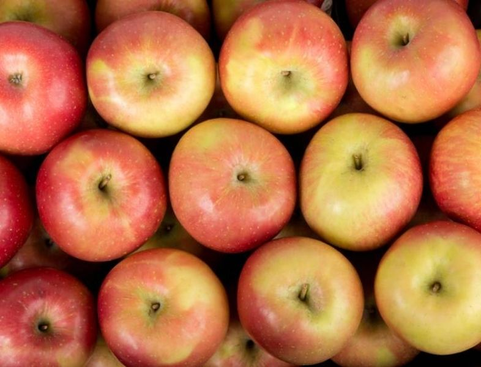

Pomme Gala
La Gala est une pomme sucrée et aromatique avec une chair ferme et croquante. Parfaite pour une collation ou une salade.
Pomme Granny Smith
La Granny Smith est connue pour sa saveur acidulée et rafraîchissante. Idéale pour les tartes et les recettes de cuisine.
Pomme Fuji
La Fuji est une pomme très sucrée avec une texture croquante. Excellente à manger crue ou en dessert.
Pomme Golden Delicious
La Golden Delicious est douce et juteuse avec une chair tendre. Idéale pour les salades et les desserts.
Pomme Honeycrisp
La Honeycrisp est célèbre pour sa texture croquante et son équilibre parfait entre sucré et acidulé. Parfaite à manger crue.